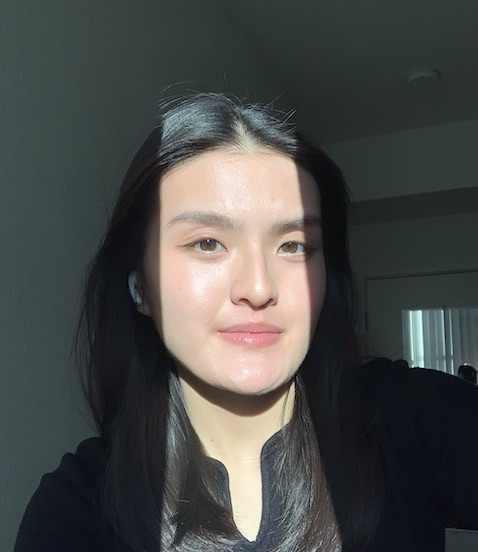

Tiffany Tra
Data Science 2025
Hi I'm Tiffany! I’m a huge fan of eating copious amounts of fruit, spending too much money on matcha from Mind, and listening to book/movie recaps
(trying to get back into PJO so I can watch the new show). My current mission is to find the best wide leg pants because I am obsessed.
- T-toust
- Freshroll
- Marugame Udon

- Something I learned from this article is that everything I see on a screen started with a design choice and an intention.
Even seemingly small things like putting the word "London" instead of a basic "Search here" in the search bar can change
the way the user feels.
- My favorite part of this article was when the author broke down examples from common apps that people use. It was very
interesting and different to see an app I use all the time, like Spotify, but this time see if through the eyes of a designer rather
than an end user.
- "Open an app you use often and resist the urge to start scrolling through content.
Instead, I want you to actively focus on the screen in front of you."
- I would give this article a 8/10. It had intersting examples and wasn't too long.